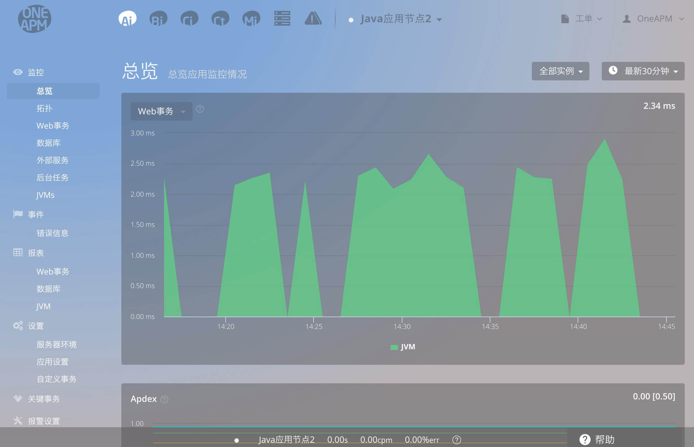
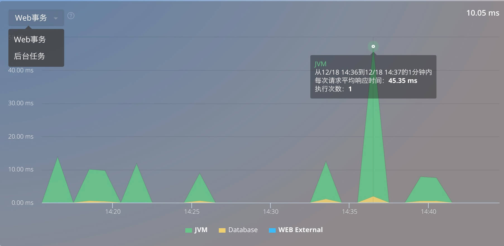
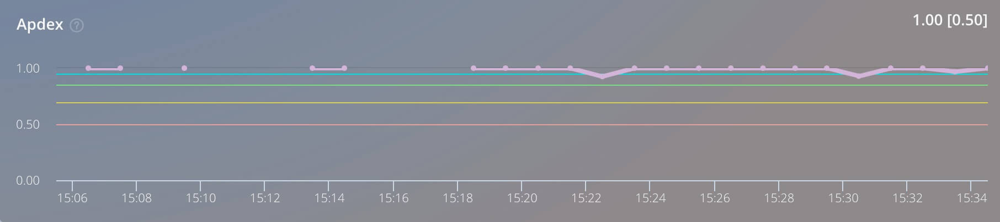
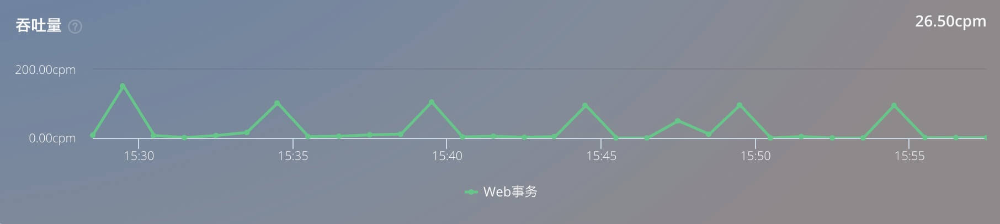
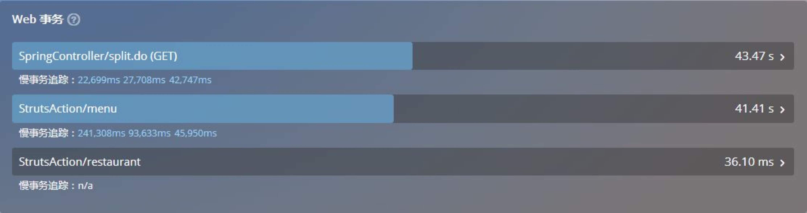
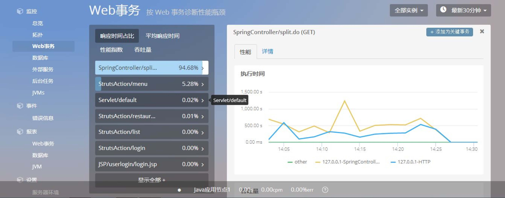
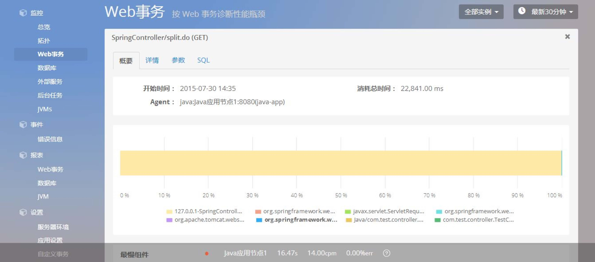
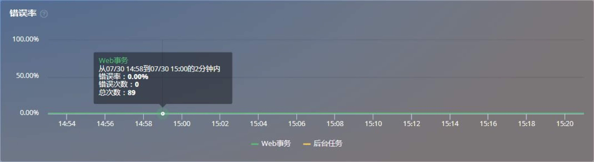
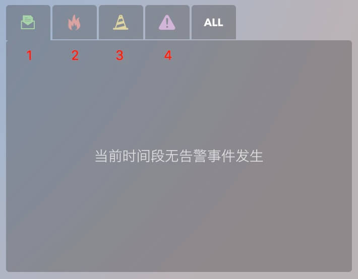

监控-总览
- 该页面为总览页面，共由 Ai 功能栏、选择器、底部滚动栏、相关指标图表和添加按钮这 4 个部分组成。

Ai 功能栏：
- 分为“监控、事件、报表、设置、 关键事务、报警设置”6 个一级功能模块。每个一级功能模块下，又 有若干个二级功能模块。选中不同的功能模块，进行功能切换。
选择器：
应用选择器——点击弹出列表，展示所有应用程序，通过选中某一应用进行切 换。应用名称前面的小圆点，其颜色代表应用的健康状况。
数据对比勾选项——勾选该项，展示“今天（到目前为止）、昨天、上周时间 “这 3 个时间跨度下，“响应时间、Apdex 值、吞吐量”3 个指标的数据变化折线图。
实例选择器——点击弹出列表，展示该应用下的所有实例（agent）。通过选中某一个实例进行切换，默认选择“全部实例”。
时间选择器——点击时间选择器，选择查看数据的时间跨度。提供 9 个时间跨
底部滚动栏：
实时展示了当前应用在最近两分钟的实时数据，从左到右依次为：应用名 称、平均响应时间、吞吐量、错误率。
应用名称前面的小圆点，其颜色代表应用的健康状况。
响应时间图表，如下图：
- Web 事务响应时间图表

响应时间图主要由 5 部分组成
Web 事务：应用中 Web 事务的响 应时间;
Database：应用中 SQL 语句的响应时间;
JVM：应用中 JVM 的响应时间;
WEB External ：Http 请求第三方服务调用;
后台任务：代表应用中 后台任务的执行时间;
响应时间的四维展示：
- Ai 将 Web 事务响应时间分为 3 个维度[1.JVM 的响应时间;2.Database 的响应时间;3.WEB External 的响应时间;]以堆叠面积图的方式代表 Web 事务的响应时间。
查看具体节点的指标数据：
将鼠标悬停在图上某个节点，将显示节点对应时间段内的指标数据（节点对应的 时间段，随时间选择器选择的时间跨度而变化），包括平均响应时间、执行次数。
响应时间图，支持“用户直接在图上拖动鼠标，选择数据的时间跨度”的功能。
Apdex 图，如下图：
Apdex 图： 
Apdex 图展示了 Apdex 值随时间的变化情况。
首先，什么是 Apdex?
Apdex，英文全称为 Application Performance Index，是指“应用性能指标”。Apdex 是一个国际通用标准，能够量化用户对应用性能的满意度，并通过统一的衡量、计算和报 告方法，将最终用户体验和应用性能作为完整指标，进行统一度量。
经过大量的应用数据分析，Ai 将应用性能分为 3 个等级，同时确定了阈值——阈值 为 T（默认为 0.4 秒，用户可根据自身应用环境进行修改）;用户请求按照阈值分为满意（响应时间
这样，应用性能被量化为 0、1 之间的数值（0 代表没有满意用户，1 则代表所有用户 都满意），即 Apdex 值。通过 Apdex 值与用户体验的紧密关联，为管理者提供了一种通 过应用性能量化值来评估用户满意度的方法。
提示：
每个图表上都有“提示”标签。鼠标移动到此处，即可查看该图表所展示指标的相关解释。
吞吐量的二维展示：将鼠标悬停在图上某个节点，将显示节点对应时间段内的指标数据 （节点对应的时间段，随时间选择器选择的时间跨度而变化），包 括性能指数、不满意次数、满意次数、可容忍次数、样本总数。
吞吐量图，如下图：
吞吐量图 
吞吐量图展示了 Apdex 值随时间的变化情况。
首先，什么是吞吐量?
应用吞吐量，是指应用程序每分钟被调用的次数（cpm，即 Calls Per Minute）。吞吐量可以反映应用系统对于用户请求的响应能力。
查看具体节点的指标数据：将鼠标悬停在图上某个节点，将显示节点对应时间段内的指标数据 （节点对应的时间段，随时间选择器选择的时间跨度而变化），包括每分钟接收请求次数，请求总数。
Web 事务列表
- Web 事务列表展示了当前应用下、平均响应时间为 Top3 的事务。同时在 事务名称下，也展示出该事务的慢事务追踪（trace），用于记录在某个时候、 响应时间超出阈值的事务的详细信息。
首先，什么是事务?
- 一个事务，表示一个从“用户从终端发出请求 -> 应用服务器 -> 数据库查询-> 应用服务器 -> 用户终端”的完整过程。通常表现为一个 HTTP 请求。

点击对应的事务，跳转到“监控-Web 事务”页面下并选中该事务，展示该事务的详细信息。

点击某条慢事务追踪，跳转到“监控-Web 事务”页面下并选中该 trace，展示该 trace 的详细信息。

错误率图
- 错误率图展示了应用的错误率随时间的变化情况。
首先，什么是错误率?
- 错误率是指应用程序返回异常数据的比率。（异常数据，是指java所抛出的 异常信息 、http无法响应、web无响应等错误信息，与应用程序运行日志中的错误信息等没有一一对应关系。）
 查看具体节点的指标数据：将鼠标悬停在图上某个节点，将显示节点对应时间段内的指标数据（节点对应的 时间段，随时间选择器选择的时间跨度而变化），包括错误率、错误次数、总次数。
错误率的二维展示：Ai 将错误率分为 2 个维度[1.Web 事务的错误率;2.后台任务的错误率;]。以折线图的方式进行展示。点击图下方的两个维度，可以 在”展示或隐藏相应维度数据“间进行切换。
服务器列表
- 服务器列表展示了应用的错误率随时间的变化情况。
首先，什么是服务器?
服务器，此处是指应用服务器，区别于一般所说的物理服务器。当一个应用运行在多 个应用服务器上时，我们在每一个应用服务器上部署 Ai 探针，就可以监控应用运行时的 服务器性能指标。
JVM(Java Virtual Machine，Java 虚拟机：点击不同的 JVM，可以查看当前应用在不同实例下的指标信息。
报警列表
- 报警列表展示了与当前应用有关的所有触发报警的问题、通知。
首先，什么是服务器?
- 服务器，此处是指应用服务器，区别于一般所说的物理服务器。当一个应用运行在多 个应用服务器上时，我们在每一个应用服务器上部署 Ai 探针，就可以监控应用运行时的 服务器性能指标。
性能问题：
Ai 将性能问题分为“宕机、严重问题、告警问题”三类。当性能问题出 现时，Ai 会触发相应的报警策略，并发送通知，同时记录该性能问题。问题记录按照问题的类别，分别显示在报警列表的“宕机”、“严重问题”、 “告警问题”下。
三类性能问题，都有相应的详情页面，通过图表等方式，记录了相应的 详细数据，方便用户定位并排查问题。点击蓝色“详情”链接即可进入。
三个问题图标，从左到右下图中标记[2;3;4;]依次为[宕机;严重问题;告警问题;] 
通知：
上图中标记1.为通知图标，记录的详细的告警日志信息。
当性能问题出现时，Ai 会触发相应的报警策略，并发送通知。通知展示在报警 列表的“通知”下。
通知有相应的详情页面，通过图表等方式，记录了相应的详细数据，以及触发报 警策略、发送通知的问题记录。点击蓝色“详情”链接即可进入。
通知与报警策略关联紧密，可以记录报警策略的变化，方便用户定位并排查问题。